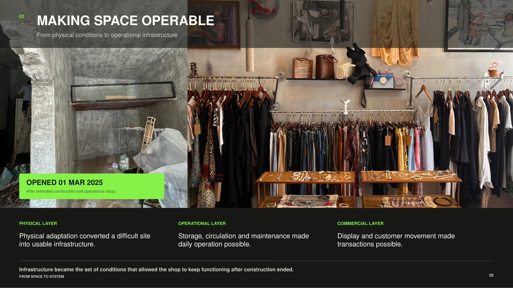
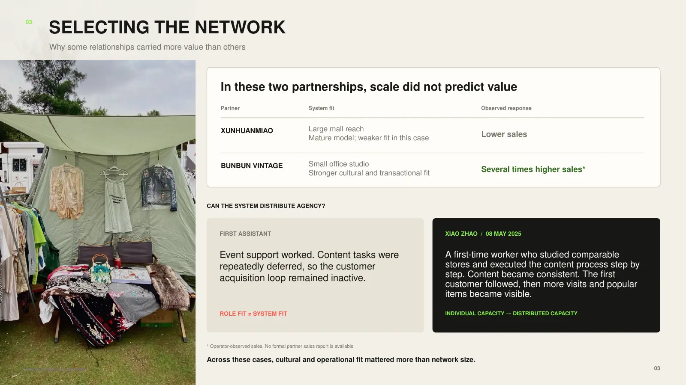
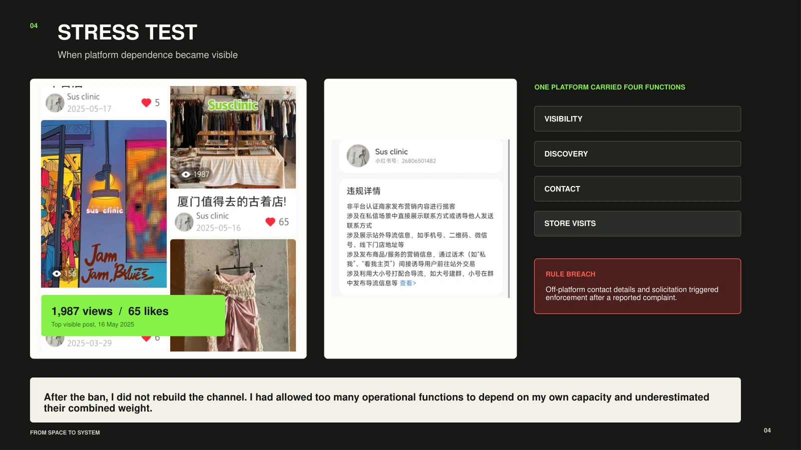
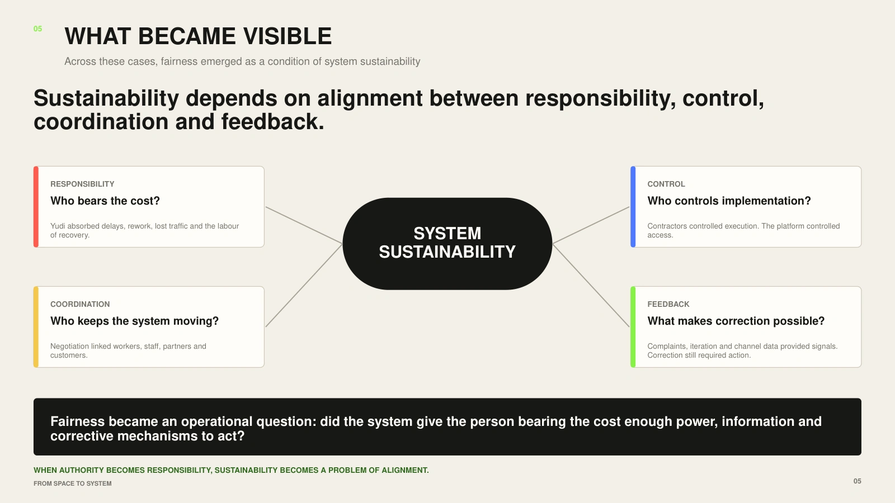
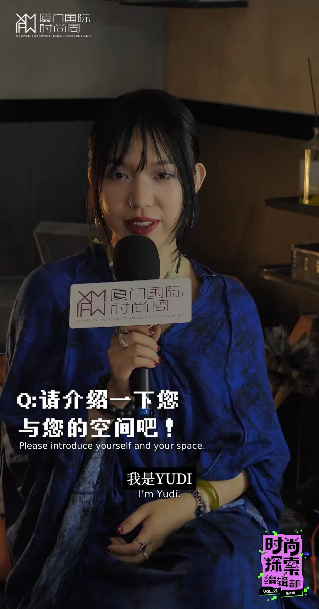

02 / INTERDEPENDENCE · OPERATIONAL SYSTEM
From Space to System
How does a small ecosystem keep operating through relationships among its parts?
I transformed a constrained and previously unusable space into a functioning zero-waste and vintage operation, while shaping its physical environment, sourcing, material circulation, customer relationships, and daily operations as connected parts.
Rather than treating the space as a finished design object, I treated it as an evolving ecosystem: resources move through relationships, feedback travels, and each decision changes what the operation can sustain. These pages follow how those dependencies shaped the system over time.





PRACTICE CONTEXT
Interviewed by Xiamen International Fashion Week, 2026
The interview documents the operational context behind this work.

Watch full interview ↗